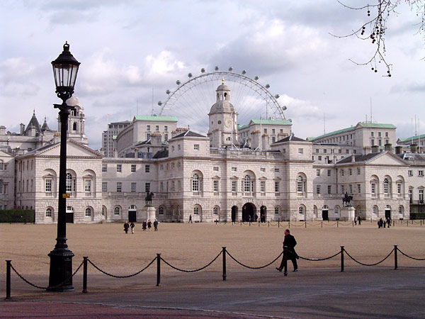

皇家騎兵衛隊 (Horse Guard Parade) 的所在地，原本是『Palace of Whitehall's tiltyard』，在白金漢宮的旁邊。閱兵場在皇家騎兵衛隊建築 (Horse Guard Building) 前方一片空曠的場地，場地中間是一個用鐵鍊圍起來的正方形。英國皇室外圍的巡邏工作就交給皇家騎兵，騎著馬每天在白金漢宮外圍巡邏一圈，所有車輛都得讓道。然後在巡邏之前，會有一個兩隊衛兵換崗的傳統儀式。
皇家騎兵衛隊 (Horse Guard Parade) 每天這裡的遊人都是絡繹不絕，是通向英國皇室居住區的大門。 皇家騎兵衛隊 (Household Cavalry) 已經鎮守這座大門三百多年了，每天上午在這裡舉行的換崗儀式，讓世界各地的遊客都能目睹到騎兵衛隊的風采。這些高頭駿馬也都經過了嚴格的訓練，非常聽話。
皇家騎兵衛隊作為一種保留的傳統儀式，騎兵衛隊地位非常特殊，為女王服務，上崗期間擁有極高的權力。但他們所擁有的服裝，道具等等，在今天的社會上更像是單純的裝飾品而已。就像他們騎馬時穿的靴子，並不允許拿來走路穿，因為它們是專門為了騎馬而定制的，用來走路是一種對儀式和傳統的褻瀆。換崗儀式中，指揮官會念上幾句忠於女王的口號，以及發令宣布左轉右轉。他們把馬刀（Saber）放在肩上，閉著眼睛似乎是在宣誓。
聽說每個隊列中只有一匹白馬，其餘的都是黑馬。騎白馬的是軍號手 (Trumpeter；Bugler)，軍號手騎白馬很容易和其他士兵區分，但是英文中稱軍號手的白馬為『Grey Horses』，意思是灰馬。在 18、19 世紀的戰爭中，交戰雙方有君子協議，戰爭中不許傷害軍號手。不過換崗儀式中，並沒有看到騎白馬的軍號手。
馬隊交接分兩組人馬，一組是紅隊，一組是藍隊，分別有自己的指揮官。兩組皇家騎兵衛隊成員的服裝顏色不同：穿紅上衣制服 (red tunic)，頭盔上有白色纓子 (white plume) 的騎兵來自皇家近衛騎兵團 (Life Guards Regiment)；而穿深藍色上衣制服 (blue tunic)，頭盔上有紅色纓子 (red plume) 的騎兵來自藍軍皇家騎兵團 (Blues and Royals Regiment )。
皇家騎兵衛隊進行的換崗儀式，絕對是遊客們不可錯過的觀光景點之一，遊客們可以自由選擇適當的場次前往觀賞。換崗儀式純屬免費表演，不分假日、酷暑、或嚴寒的日子，最後再進行結束儀式，讓衛隊回到衛隊廳，整個換崗儀式則結束。宏亮的聲音進行換崗儀式，整個儀式的過程都非常逼真，對於推動觀光真是不遺餘力喔。
